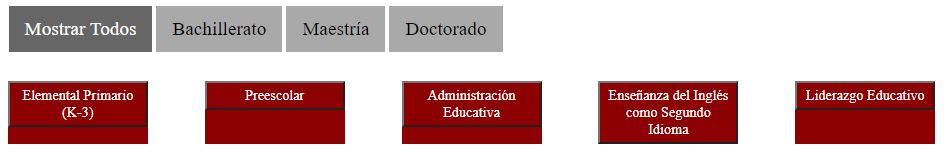
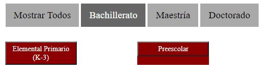
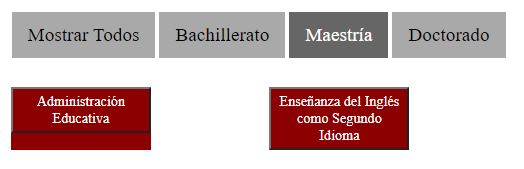
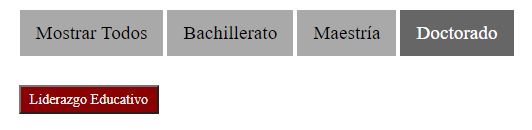

En la barra de búsqueda se puede escribir el código de un curso parcialmente o en su totalidad. Del mismo modo, se pude escribir el título de un curso de forma parcial o en su totalidad. Al escribir de forma parcial se pueden obtener más de un resultado. Por ejemplo, si escribe en la barra de búsqueda "ed", como resultado puede obtener cursos que como parte de su código de curso tengan las letras "ed" en algún lugar de su código, o incluso en su título pero de forma consecutiva, es decir, que la “e” y la “d” deben estar juntas y sin espacios entre ellas.
Ahora se explicará la búsqueda a través de los programas. Como se muestra en las fotos a continuación, existen varios filtros. El primero de estos siendo "Mostrar Todos" con el cual podemos ver todos los programas que se encuentran en el sistema. A continuación, se encuentran los filtros "Bachillerato", "Maestría", y "Doctorado", los cuales como sus nombres indican, muestran los programas pertenecientes al bachillerato, maestría, y al doctorado respectivamente. Es importante recalcar que le debe dar "click" sobre el nombre del programa para ver los cursos que estos poseen.
   